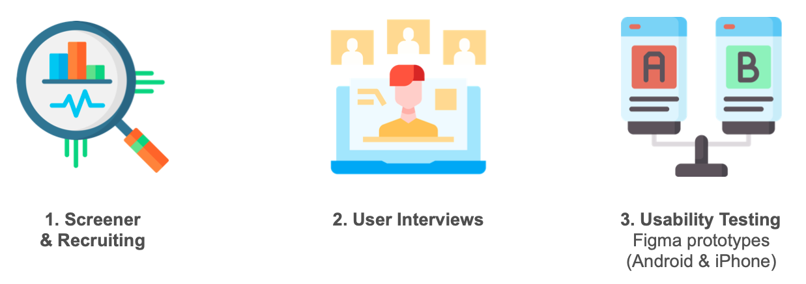
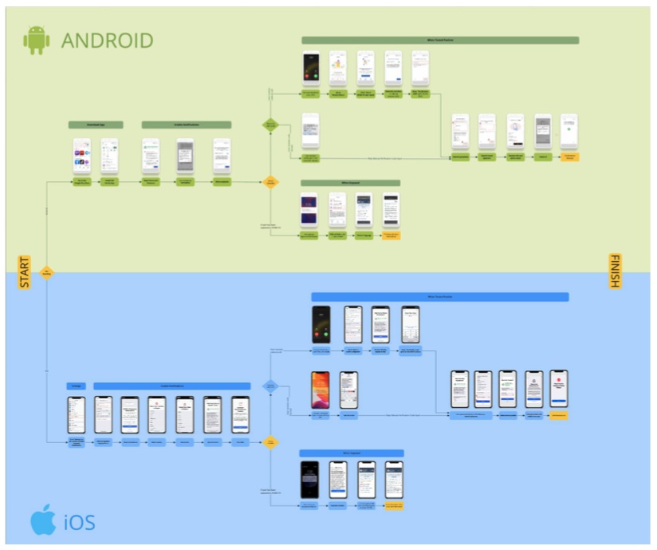
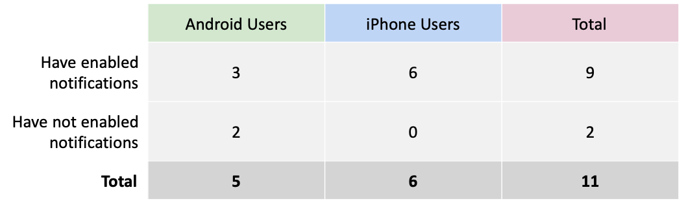
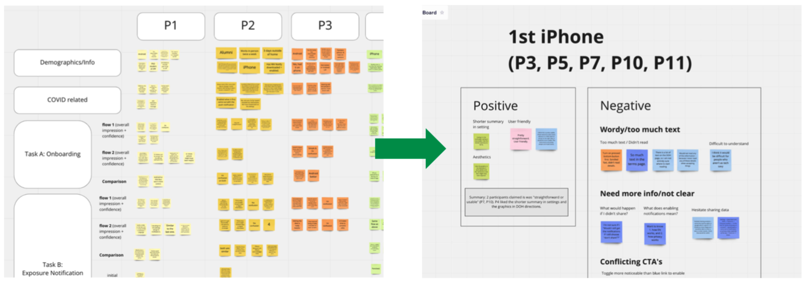
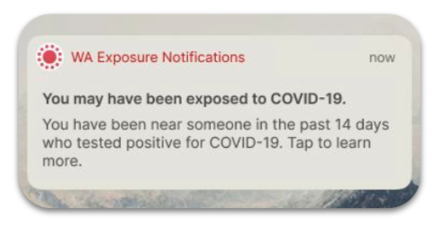
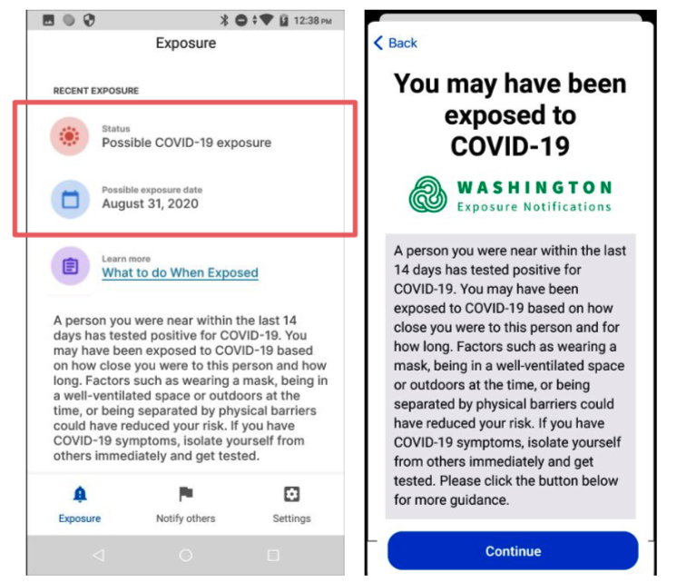
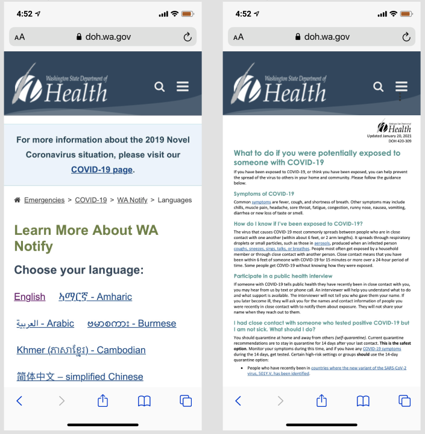

<!DOCTYPE html>
<html lang="en-us">

<head>

  <meta charset="utf-8">
  <meta name="viewport" content="width=device-width, initial-scale=1">
  <meta http-equiv="X-UA-Compatible" content="IE=edge">
  <meta name="generator" content="Source Themes Academic 4.5.0">

  

  
  
  
  
  
    
    
    
  
  

  <meta name="author" content="Jin Jeon">

  
  
  
    
  
  <meta name="description" content="Task-based, comparative usability study on the COVID alert systems in iOS and Android">

  
  <link rel="alternate" hreflang="en-us" href="https://jinjeon.me/project/wa-notify/">

  


  
  
  
  <meta name="theme-color" content="#2962ff">
  

  
  
  
  
    
    <link rel="stylesheet" href="https://cdnjs.cloudflare.com/ajax/libs/academicons/1.8.6/css/academicons.min.css" integrity="sha256-uFVgMKfistnJAfoCUQigIl+JfUaP47GrRKjf6CTPVmw=" crossorigin="anonymous">
    <link rel="stylesheet" href="https://cdnjs.cloudflare.com/ajax/libs/font-awesome/5.11.2/css/all.min.css" integrity="sha256-+N4/V/SbAFiW1MPBCXnfnP9QSN3+Keu+NlB+0ev/YKQ=" crossorigin="anonymous">
    <link rel="stylesheet" href="https://cdnjs.cloudflare.com/ajax/libs/fancybox/3.5.7/jquery.fancybox.min.css" integrity="sha256-Vzbj7sDDS/woiFS3uNKo8eIuni59rjyNGtXfstRzStA=" crossorigin="anonymous">

    
    
    
      
    
    
      
      
        
          <link rel="stylesheet" href="https://cdnjs.cloudflare.com/ajax/libs/highlight.js/9.15.10/styles/github.min.css" crossorigin="anonymous" title="hl-light">
          <link rel="stylesheet" href="https://cdnjs.cloudflare.com/ajax/libs/highlight.js/9.15.10/styles/dracula.min.css" crossorigin="anonymous" title="hl-dark" disabled>
        
      
    

    

    

  

  
  
  
  <link rel="stylesheet" href="https://fonts.googleapis.com/css?family=https://fonts.googleapis.com/css2?family=Open+Sans:wght@300&display=swap">
  

  
  
  
  
  <link rel="stylesheet" href="/css/academic.css">

  


  


  

  <link rel="manifest" href="/index.webmanifest">
  <link rel="icon" type="image/png" href="/img/icon-32.png">
  <link rel="apple-touch-icon" type="image/png" href="/img/icon-192.png">

  <link rel="canonical" href="https://jinjeon.me/project/wa-notify/">

  
  
  
  
    
  
  
  <meta property="twitter:card" content="summary_large_image">
  
  <meta property="og:site_name" content="Jin Jeon">
  <meta property="og:url" content="https://jinjeon.me/project/wa-notify/">
  <meta property="og:title" content="WA COVID Exposure Notification Usability Study | Jin Jeon">
  <meta property="og:description" content="Task-based, comparative usability study on the COVID alert systems in iOS and Android"><meta property="og:image" content="https://jinjeon.me/project/wa-notify/featured.png">
  <meta property="twitter:image" content="https://jinjeon.me/project/wa-notify/featured.png"><meta property="og:locale" content="en-us">
  
    
      <meta property="article:published_time" content="2021-03-31T00:00:00&#43;00:00">
    
    <meta property="article:modified_time" content="2021-03-31T00:00:00&#43;00:00">
  

  


    


<script type="application/ld+json">
{
  "@context": "https://schema.org",
  "@type": "Article",
  "mainEntityOfPage": {
    "@type": "WebPage",
    "@id": "https://jinjeon.me/project/wa-notify/"
  },
  "headline": "WA COVID Exposure Notification Usability Study",
  
  "image": [
    "https://jinjeon.me/project/wa-notify/featured.png"
  ],
  
  "datePublished": "2021-03-31T00:00:00Z",
  "dateModified": "2021-03-31T00:00:00Z",
  
  "author": {
    "@type": "Person",
    "name": "Jin Jeon"
  },
  
  "publisher": {
    "@type": "Organization",
    "name": "Jin Jeon",
    "logo": {
      "@type": "ImageObject",
      "url": "https://jinjeon.me/img/icon.png"
    }
  },
  "description": "Task-based, comparative usability study on the COVID alert systems in iOS and Android"
}
</script>

  

  


  


  


  <title>WA COVID Exposure Notification Usability Study | Jin Jeon</title>

</head>

<body id="top" data-spy="scroll" data-offset="70" data-target="#TableOfContents" >

  <aside class="search-results" id="search">
  <div class="container">
    <section class="search-header">

      <div class="row no-gutters justify-content-between mb-3">
        <div class="col-6">
          <h1>Search</h1>
        </div>
        <div class="col-6 col-search-close">
          <a class="js-search" href="#"><i class="fas fa-times-circle text-muted" aria-hidden="true"></i></a>
        </div>
      </div>

      <div id="search-box">
        
        <input name="q" id="search-query" placeholder="Search..." autocapitalize="off"
        autocomplete="off" autocorrect="off" spellcheck="false" type="search">
        
      </div>

    </section>
    <section class="section-search-results">

      <div id="search-hits">
        
      </div>

    </section>
  </div>
</aside>


  
<nav class="navbar navbar-light fixed-top navbar-expand-lg py-0 compensate-for-scrollbar" id="navbar-main">
  <div class="container">

    
      <a class="navbar-brand" href="/"></a>
      
      <button type="button" class="navbar-toggler" data-toggle="collapse"
              data-target="#navbar" aria-controls="navbar" aria-expanded="false" aria-label="Toggle navigation">
        <span><i class="fas fa-bars"></i></span>
      </button>
      

    
    <div class="collapse navbar-collapse" id="navbar">

      
      
      <ul class="navbar-nav mr-auto">
        

        

        
        
        
          
        

        
        
        
        
        
        
          
          
          
            
          
          
        

        <li class="nav-item">
          <a class="nav-link " href="/#about"><span>About Me</span></a>
        </li>

        
        

        

        
        
        
          
        

        
        
        
        
        
        
          
          
          
            
          
          
        

        <li class="nav-item">
          <a class="nav-link " href="/#projects"><span>Projects</span></a>
        </li>

        
        

        

        
        
        
          
        

        
        
        
        
        
        
          
          
          
            
          
          
        

        <li class="nav-item">
          <a class="nav-link " href="/#experience"><span>Experience</span></a>
        </li>

        
        

        

        
        
        
          
        

        
        
        
        
        
        
          
          
          
            
          
          
        

        <li class="nav-item">
          <a class="nav-link " href="/#posts"><span>Posts</span></a>
        </li>

        
        

        

        
        
        
          
            
          
        

        
        
        
        
        
        

        <li class="nav-item">
          <a class="nav-link " href="https://drive.google.com/file/d/0B9S8oX9rcjjjMDY3ZlVxczlReVk/view?usp=sharing" target="_blank" rel="noopener"><span>CV</span></a>
        </li>

        
        

        

        
        
        
          
        

        
        
        
        
        
        
          
          
          
            
          
          
        

        <li class="nav-item">
          <a class="nav-link " href="/#contact"><span>Contact</span></a>
        </li>

        
        

      
      </ul>
      <ul class="navbar-nav ml-auto">
      

        

        
        <li class="nav-item">
          <a class="nav-link js-search" href="#"><i class="fas fa-search" aria-hidden="true"></i></a>
        </li>
        

        

        

      </ul>

    </div>
  </div>
</nav>


  <article class="article article-project">

  


<div class="article-header">
  
  
  
  

  
</div>


  

  
  
  
<div class="article-container pt-3">
  <h1>WA COVID Exposure Notification Usability Study</h1>

  

  
    


<div class="article-metadata">

  
  

  
  <span class="article-date">
    
    
      
    
    Wed, Mar 31, 2021
  </span>
  

  

  

  
  
  

  
  

</div>

    


  
</div>


  <div class="article-container">

    <div class="article-style">
      

<style>
.introduction {
  column-count: 2;
}
</style>

<p><body style="font-family:Arial; font-size: 12pt">
<div class="introduction">
<b><h style="font-family:georgia">My Role:</h></b>
<br><small>UX researcher in a group of 4 graduate students </small><br><br></p>

<p><b><h style="font-family:georgia">Methods:</h></b>
<br><small><strong>Usability testing</strong>, <strong>AB testing</strong>, qualitative interviews, affinity mapping </small><br><br></p>

<p><b><h style="font-family:georgia">Timeline: </h></b>
<br><small>Jan 2021 - March 2021 (~10 week graduate course project)</small><br><br></p>

<p><b><h style="font-family:georgia">Stakeholders:</h></b>
<br><small> Apple/Google program managers, WA DOH, UW professor and research lab, designers </small>
</div></p>

<hr />

<h2 id="h-style-font-family-georgia-background-what-is-wa-notify-h"><h style="font-family:georgia"> Background: What is WA Notify? </h></h2>

<p><strong>Washington Exposure Notifications (ENX, also known as WA Notify)</strong> is a tool that works through smartphones to <strong>alert users if they may have been exposed to COVID-19.</strong> Using Bluetooth, it allows smartphones to exchange randomly generated codes <strong>without revealing any personal information</strong>. <strong>As of August of 2021, there are more than 2.31 million users.</strong></p>

<ul>
<li><p>If another user you&rsquo;ve been near in the last two weeks tested positive for COVID-19 and added his verification code, anyone who was in close contact will receive an exposure alert.</p></li>

<li><p><em>If you are an iPhone user, you might have easily encountered this through your settings menu.</em></p></li>
</ul>

<h2 id="h-style-font-family-georgia-overview-h"><h style="font-family:georgia"> Overview </h></h2>

<p>The usability study combined qualitative pre and post-task interview questions and quantitative post-task usability metrics, such as Likert scales and NPS ratings.</p>

<p>Because majority of interaction happens once receiving an alert or testing positive for COVID, the study involved hypothetical situations, where users engaged with mockups of the interface. Having WA Notify available in two different versions for each OS (iOS and Android), AB testing was used to assess the experiences for each.</p>

<p>Three specific areas were assessed in the study:</p>

<ol>
<li>Onboarding and enabling the notification</li>
<li>Receiving an exposure alert (hypothetical)</li>
<li>Entering a verification code once tested positive (hypothetical)</li>
</ol>

<h2 id="h-style-font-family-georgia-objectives-h"><h style="font-family:georgia"> Objectives </h></h2>

<ul>
<li><strong>Understand first reactions</strong> to the app, DOH website&rsquo;s information page, exposure alert, and overall user experience.</li>
<li><strong>Provide evidence-based suggestions to improve the interaction</strong> (not about the specific UIs).</li>
<li><strong>Identify the experience gaps</strong> that could be present in the different OS since there has been a significant churn rate for Android users.</li>
</ul>

<h2 id="h-style-font-family-georgia-impact-h"><h style="font-family:georgia"> Impact </h></h2>

<ul>
<li>The project was spotlighted in HCDE department&rsquo;s <a href="https://www.hcde.washington.edu/news/hcde-students-work-with-wa-department-of-health-to-study-covid–19-exposure-notification-app" target="_blank"> <strong>website newsletter</strong></a></li>
<li><strong>Ensured research deliverables meet the stakeholders&rsquo; expectations</strong> by checking in weekly since the planning stage.</li>
<li><strong>Provided prioritized list of recommendations</strong> for the three areas of focus, and assessed the experience gaps between the OS to the stakeholders.</li>
</ul>

<h2 id="h-style-font-family-georgia-research-questions-h"><h style="font-family:georgia"> Research Questions </h></h2>

<blockquote>
<p><p style="font-size: 16pt"><mark><em>&ldquo;What are the first impressions of using WA Notify, and the overall experience?&rdquo;<br><br>
<mark<em>&ldquo;Are there any perceived differences between the iOS and Android, and the usefulness of the resources provided on the DOH website?&rdquo;</em></mark><br><br></p>
</blockquote>

<h2 id="h-style-font-family-georgia-research-process-h"><h style="font-family:georgia"> Research Process </h></h2>


<figure>


  <a data-fancybox="" href="research-process.png" >
</a>


</figure>


<hr />

<p><br></p>

<h2 id="h-style-font-family-georgia-design-of-the-study-h"><h style="font-family:georgia"> Design of the Study </h></h2>


<figure>


  <a data-fancybox="" href="userflow.png" data-caption="The team initially laid out the user flow visually for each OS. The overall steps were broken down into three parts: onboarding, receiving alerts, and entering the verification code for positive COVID test results.">
</a>


  
  
  <figcaption>
    The team initially laid out the user flow visually for each OS. The overall steps were broken down into three parts: onboarding, receiving alerts, and entering the verification code for positive COVID test results.
  </figcaption>


</figure>


<h3 id="tasks">Tasks:</h3>

<ul>
<li>The study was broken down into <strong>3 major tasks:</strong>

<ul>
<li><strong>Task A:</strong> Finding the instructions, and enabling the notification

<ul>
<li><em>Using a DOH resource link provided, enable WA Notify on your device</em></li>
</ul></li>
<li><strong>Task B:</strong> Receiving an exposure alert, and deciding what actions to take next

<ul>
<li><em>You received a text from the DOH that you may have been exposed. What do you do now?</em></li>
</ul></li>
<li><strong>Task C:</strong> Receiving a text message for testing positive from COVID, and deciding what to do next

<ul>
<li><em>You tested positive for COVID and received a text from DOH. What do you do now?</em></li>
</ul></li>
</ul></li>
</ul>

<p><br></p>

<ul>
<li>After each task:

<ul>
<li>a confidence score rating question was assessed.</li>
<li>probed for areas of confusion, recommendations, and how the experiences in the two flows differed if any.</li>
</ul></li>
<li>Each participant was tested with both versions of the WA Notify.

<ul>
<li>One entire flow of OS was presented before presenting the other.</li>
<li>For example, a participant first completed the iPhone version. Then, completed the Android flow.</li>
<li><strong>To avoid bias or familiarity of the OS and the phone type the participants use, the order was counterbalanced.</strong></li>
</ul></li>
</ul>

<h3 id="target-audience">Target Audience:</h3>

<ul>
<li>The target audience was broadly defined as anyone who resides in WA state who has an Android or iOS device. This included people of all backgrounds, education levels, and technology literacy.

<ul>
<li><strong><em>The more people who enable and use WA Notify, the more effective the system is in tracing the COVID.</em></strong></li>
</ul></li>
<li>For screener,</li>
</ul>

<h3 id="demographics">Demographics:</h3>

<ul>
<li>A total of 11 participants were tested.</li>
<li>Age range of 18-34.</li>
<li>During the screener, participants&rsquo; information, such as phone types, whether they had previously enabled the notification, and tested for COVID, were identified.</li>
</ul>


<figure>


  <a data-fancybox="" href="demographics.png" data-caption="We had even split between Android and iPhone users. For iPhone users, we see that all participants had previously enabled the notifications.">
</a>


  
  
  <figcaption>
    We had even split between Android and iPhone users. For iPhone users, we see that all participants had previously enabled the notifications.
  </figcaption>


</figure>


<h3 id="data-analysis">Data Analysis:</h3>


<figure>


  <a data-fancybox="" href="data-analysis.png" data-caption="The team then took the data to do affinity mapping to search for patterns and common themes. Each participant was color-coded.">
</a>


  
  
  <figcaption>
    The team then took the data to do affinity mapping to search for patterns and common themes. <br>Each participant was color-coded.
  </figcaption>


</figure>


<hr />

<p><br></p>

<h2 id="h-style-font-family-georgia-research-findings-h"><h style="font-family:georgia"> Research Findings </h></h2>

<p><strong><em>For readability, I highlight findings from Task B only.</em></strong> Please reach out for more information.</p>

<h3 id="task-b-receiving-an-exposure-alert-and-deciding-what-to-do-next">Task B. Receiving an exposure alert, and deciding what to do next:</h3>


<figure>


  <a data-fancybox="" href="task.png" data-caption="Participants were shown the exposure alert, and asked what they would do next.">
</a>


  
  
  <figcaption>
    Participants were shown the exposure alert, and asked what they would do next.
  </figcaption>


</figure>


<h3 id="insight-1">Insight #1:</h3>

<ul>
<li>After receiving the alert, participants&rsquo; immediate reactions were to:

<ul>
<li><strong>Learn more about the details of the exposure.</strong>

<ul>
<li>Seeing where, when, and who, and even a map that pinpoints the possible exposure.</li>
<li><em>&ldquo;I would be curious where I might have been exposed &hellip; <strong>like a map that pinpoints the exposure.</strong> (P1)&rdquo;</em></li>
<li><em>&ldquo;I would be concerned. Where must have I gone? Who did I get in contact with? (P8)&rdquo;</em></li>
</ul></li>
<li><strong>See resources on getting tested.</strong>

<ul>
<li><em>&ldquo;I expected to see more directions on testing sites and resources. (P11)&rdquo;</em></li>
</ul></li>
</ul></li>
</ul>

<h3 id="insight-2">Insight #2:</h3>

<ul>
<li>Both flows were perceived as similar: <strong>&ldquo;simple&rdquo;</strong> and <strong>&ldquo;straightforward.&rdquo;</strong></li>
<li><strong>Android&rsquo;s landing screen was preferred</strong> because it showed a summary and possible exposure data, whereas iPhone initially shows a heavy text upfront.

<ul>
<li><em>&ldquo;<strong>[Android] makes it more clear about the exposure data</strong> and what to do next. (P7)&rdquo;</em></li>
</ul></li>
<li>Experiences in both versions made sense to the participants. Most concerns were raised in the DOH&rsquo;s &lsquo;What to do Next&rsquo; resource web page.

<ul>
<li><em>&ldquo;Good until the point of clicking the link to &lsquo;Learn More.&rsquo; (P4)&rdquo;</em></li>
</ul></li>
</ul>


<figure>


  <a data-fancybox="" href="insight2.png" data-caption="Android (left) has a summary page vs. iPhone (right) shows a heavy text upfront.">
</a>


  
  
  <figcaption>
    <strong>Android (left) has a summary page vs. iPhone (right) shows a heavy text upfront.</strong>
  </figcaption>


</figure>


<h3 id="insight-3">Insight #3:</h3>

<ul>
<li>Once the participants reached the page, they were asked series of questions on the overall impression and finding specific information on what to do next within the DOH&rsquo;s website.</li>
</ul>


<figure>


  <a data-fancybox="" href="insight3.png" data-caption="Participants had to find information on what to do next on the DOH website.">
</a>


  
  
  <figcaption>
    Participants had to find information on what to do next on the DOH website.
  </figcaption>


</figure>


<h4 id="pros">Pros:</h4>

<ul>
<li>Comprehensive of the information in the page</li>
</ul>

<h4 id="cons">Cons:</h4>

<ul>
<li>Difficult to find relevant information</li>
<li>Contents seem useful, but <strong>too generic</strong> that <strong>doesn&rsquo;t meet the expectations</strong> of the users that just received the exposure alert would look for</li>
</ul>

<h4 id="confidence-rating">Confidence Rating:</h4>

<ul>
<li><p>At the end of the task, participants were asked, <br> <strong><em>&ldquo;How confident do you feel on what to do next upon possible exposure?&rdquo;</em></strong> (5 being most confident)</p>

<ul>
<li><strong>Flow 1.</strong> iPhone settings to the DOH Website: 3: <strong>3.5</strong>/5.0</li>
<li><strong>Flow 2.</strong> Android App to the DOH Website: 3: <strong>4.0</strong>/5.0</li>
</ul></li>

<li><p>Confidence rating in the Android version scored highly possibly due to the <strong>better summary page that was provided.</strong> However, with our sample size, <strong>the rating should be taken as a grain of salt</strong> at the stage.</p></li>
</ul>

<hr />

<p><br></p>

<h2 id="h-style-font-family-georgia-recommendations-h"><h style="font-family:georgia"> Recommendations </h></h2>

<p>Based on the feedbacks provided from the participants and insights, I came up with 3 recommendations:</p>

<ol>
<li><p><strong>Prioritize more ACTIONABLE information</strong></p>

<ul>
<li>Information, such as COVID symptoms, were considered common sense at this point</li>
<li><em>&ldquo;To me, it feels like it&rsquo;s common knowledge, such as symptoms (P1)&rdquo;</em></li>
<li><em>&ldquo;I expected to see more simplified summary. <strong>It&rsquo;s 2021 and I already have context of COVID</strong> (P11)&rdquo;</em></li>
<li><em>&ldquo;Guidelines seem informational. Nothing to act on. (P4)&rdquo;</em></li>
</ul></li>

<li><p><strong>Make information about testing sites more available</strong></p>

<ul>
<li>After seeing the exposure notification, most participants wanted and expected to immediately get tested, but had hard time finding the correct information</li>
<li>Show information about nearby clinics or how to get scheduled for a test</li>
<li><em>&ldquo;Does it have information on testing sites? I would like to know what steps to take next. (P9)&rdquo;</em></li>
</ul></li>

<li><p><strong>Less text and more visuals</strong></p>

<ul>
<li>A lot of word and information were provided upfront while participants were going under stress from the alert</li>
<li>Visuals or infographics can better direct them to relevant information</li>
<li><em>&ldquo;It feels really wordy and it&rsquo;s <strong>too much all at once.</strong> (P8)&rdquo;</em></li>
</ul></li>
</ol>

<hr />

<p><br></p>

<h2 id="h-style-font-family-georgia-limitations-challenges-h"><h style="font-family:georgia"> Limitations &amp; Challenges </h></h2>

<ol>
<li><p>Due to the sample size, the usability metrics collected were not examined for any <strong>statistical significance.</strong></p></li>

<li><p><strong>Recruiting was mainly convenience sampling:</strong> More than half of the participants were affiliated with the University of Washington, which may not be fully representative of the general public of WA state.</p></li>

<li><p>The usability tasks were limited to remotely observing participants&rsquo; interactions within the prototype as the tasks involved hypothetical situations, such as getting an exposure or positive test alert.</p></li>

<li><p>For the scope of the project, only limited DOH webpages were tested.</p></li>
</ol>

<p><strong>Have any questions? Please reach out!</strong></p>

<p><br></p>

<h2 id="back-to-top"><a href="#">Back to top ^</a></h2>

<p></body></p>

    </div>

    


<div class="article-tags">
  
  <a class="badge badge-light" href="/tags/research/">research</a>
  
  <a class="badge badge-light" href="/tags/evaluative-research/">evaluative-research</a>
  
  <a class="badge badge-light" href="/tags/usability-testing/">usability-testing</a>
  
  <a class="badge badge-light" href="/tags/qualitative-interviews/">qualitative-interviews</a>
  
  <a class="badge badge-light" href="/tags/affinity-diagrams/">affinity-diagrams</a>
  
  <a class="badge badge-light" href="/tags/abtesting/">ABTesting</a>
  
  <a class="badge badge-light" href="/tags/quantitative-ux/">quantitative-ux</a>
  
</div>


<div class="share-box" aria-hidden="true">
  <ul class="share">
    
      
      
      
        
      
      
      
      <li>
        <a href="https://twitter.com/intent/tweet?url=https://jinjeon.me/project/wa-notify/&amp;text=WA%20COVID%20Exposure%20Notification%20Usability%20Study" target="_blank" rel="noopener" class="share-btn-twitter">
          <i class="fab fa-twitter"></i>
        </a>
      </li>
    
      
      
      
        
      
      
      
      <li>
        <a href="https://www.facebook.com/sharer.php?u=https://jinjeon.me/project/wa-notify/&amp;t=WA%20COVID%20Exposure%20Notification%20Usability%20Study" target="_blank" rel="noopener" class="share-btn-facebook">
          <i class="fab fa-facebook-f"></i>
        </a>
      </li>
    
      
      
      
        
      
      
      
      <li>
        <a href="mailto:?subject=WA%20COVID%20Exposure%20Notification%20Usability%20Study&amp;body=https://jinjeon.me/project/wa-notify/" target="_blank" rel="noopener" class="share-btn-email">
          <i class="fas fa-envelope"></i>
        </a>
      </li>
    
      
      
      
        
      
      
      
      <li>
        <a href="https://www.linkedin.com/shareArticle?url=https://jinjeon.me/project/wa-notify/&amp;title=WA%20COVID%20Exposure%20Notification%20Usability%20Study" target="_blank" rel="noopener" class="share-btn-linkedin">
          <i class="fab fa-linkedin-in"></i>
        </a>
      </li>
    
  </ul>
</div>


  


  
  
  
    
  
  
  <div class="media author-card content-widget-hr">
    
      
      
    

    <div class="media-body">
      <h5 class="card-title"><a href="https://jinjeon.me/">Jin Jeon</a></h5>
      <h6 class="card-subtitle">UX Researcher /<br> Graduate Student</h6>
      
      <ul class="network-icon" aria-hidden="true">
  
    
    
    
    
    
    
    
      
    
    <li>
      <a href="https://drive.google.com/file/d/0B9S8oX9rcjjjMDY3ZlVxczlReVk/view?usp=sharing" target="_blank" rel="noopener">
        <i class="ai ai-cv"></i>
      </a>
    </li>
  
    
    
    
      
    
    
    
    
    
      
    
    <li>
      <a href="https://www.linkedin.com/in/jinjeon/" target="_blank" rel="noopener">
        <i class="fab fa-linkedin"></i>
      </a>
    </li>
  
    
    
    
      
    
    
    
    
    
      
    
    <li>
      <a href="https://github.com/jeon11" target="_blank" rel="noopener">
        <i class="fab fa-github"></i>
      </a>
    </li>
  
    
    
    
      
    
    
    
    
    
    <li>
      <a href="mailto:jinjeon@berkeley.edu" >
        <i class="fas fa-envelope"></i>
      </a>
    </li>
  
</ul>

    </div>
  </div>


  
  
  <div class="article-widget content-widget-hr">
    <h3>Related</h3>
    <ul>
      
      <li><a href="/project/navigating-cancer/">End-to-end design process of improving the health tracker (NDA)</a></li>
      
      <li><a href="/project/alaska-airlines/">Visualizing travel experiences through interactive journey mapping (Company sponsored project/ NDA)</a></li>
      
      <li><a href="/post/quant-ux/">Statistical Data Analysis in Cross-Cultural Research</a></li>
      
    </ul>
  </div>
  


    <div class="project-related-pages content-widget-hr">
      
      

      
      
      

      
      
      

      
      
      
    </div>
  </div>
</article>

      

    
    

    
    
    
      <script src="https://cdnjs.cloudflare.com/ajax/libs/jquery/3.4.1/jquery.min.js" integrity="sha256-CSXorXvZcTkaix6Yvo6HppcZGetbYMGWSFlBw8HfCJo=" crossorigin="anonymous"></script>
      <script src="https://cdnjs.cloudflare.com/ajax/libs/jquery.imagesloaded/4.1.4/imagesloaded.pkgd.min.js" integrity="sha256-lqvxZrPLtfffUl2G/e7szqSvPBILGbwmsGE1MKlOi0Q=" crossorigin="anonymous"></script>
      <script src="https://cdnjs.cloudflare.com/ajax/libs/jquery.isotope/3.0.6/isotope.pkgd.min.js" integrity="sha256-CBrpuqrMhXwcLLUd5tvQ4euBHCdh7wGlDfNz8vbu/iI=" crossorigin="anonymous"></script>
      <script src="https://cdnjs.cloudflare.com/ajax/libs/fancybox/3.5.7/jquery.fancybox.min.js" integrity="sha256-yt2kYMy0w8AbtF89WXb2P1rfjcP/HTHLT7097U8Y5b8=" crossorigin="anonymous"></script>

      

      
        
        <script src="https://cdnjs.cloudflare.com/ajax/libs/highlight.js/9.15.10/highlight.min.js" integrity="sha256-1zu+3BnLYV9LdiY85uXMzii3bdrkelyp37e0ZyTAQh0=" crossorigin="anonymous"></script>
        
        <script src="https://cdnjs.cloudflare.com/ajax/libs/highlight.js/9.15.10/languages/python,%20r.min.js"></script>
        
      

      
      
    

    
    

    
    
    <script>hljs.initHighlightingOnLoad();</script>
    

    
    
    
    
    
    
    <script>
      const search_config = {"indexURI":"/index.json","minLength":1,"threshold":0.3};
      const i18n = {"no_results":"No results found","placeholder":"Search...","results":"results found"};
      const content_type = {
        'post': "Posts",
        'project': "Projects",
        'publication' : "Publications",
        'talk' : "Talks"
        };
    </script>
    

    
    

    
    
    <script id="search-hit-fuse-template" type="text/x-template">
      <div class="search-hit" id="summary-{{key}}">
      <div class="search-hit-content">
        <div class="search-hit-name">
          <a href="{{relpermalink}}">{{title}}</a>
          <div class="article-metadata search-hit-type">{{type}}</div>
          <p class="search-hit-description">{{snippet}}</p>
        </div>
      </div>
      </div>
    </script>
    

    
    
    <script src="https://cdnjs.cloudflare.com/ajax/libs/fuse.js/3.2.1/fuse.min.js" integrity="sha256-VzgmKYmhsGNNN4Ph1kMW+BjoYJM2jV5i4IlFoeZA9XI=" crossorigin="anonymous"></script>
    <script src="https://cdnjs.cloudflare.com/ajax/libs/mark.js/8.11.1/jquery.mark.min.js" integrity="sha256-4HLtjeVgH0eIB3aZ9mLYF6E8oU5chNdjU6p6rrXpl9U=" crossorigin="anonymous"></script>
    

    
    

    
    

    
    
    
    
    
    
    
    
    
      
    
    
    
    
    <script src="/js/academic.min.d6bd04fdad2ad213aa8111c5a3b72fc5.js"></script>

    


  
  
  <div class="container">
    <footer class="site-footer">
  

  <p class="powered-by">
    &copy; 2021 developed by Jin Jeon with HTML/CSS/Markdown and ☕️ <br> &middot; 

    Powered by the
    <a href="https://sourcethemes.com/academic/" target="_blank" rel="noopener">Academic theme</a> for
    <a href="https://gohugo.io" target="_blank" rel="noopener">Hugo</a>.

    
    <span class="float-right" aria-hidden="true">
      <a href="#" class="back-to-top">
        <span class="button_icon">
          <i class="fas fa-chevron-up fa-2x"></i>
        </span>
      </a>
    </span>
    
  </p>
</footer>

  </div>
  

  
<div id="modal" class="modal fade" role="dialog">
  <div class="modal-dialog">
    <div class="modal-content">
      <div class="modal-header">
        <h5 class="modal-title">Cite</h5>
        <button type="button" class="close" data-dismiss="modal" aria-label="Close">
          <span aria-hidden="true">&times;</span>
        </button>
      </div>
      <div class="modal-body">
        <pre><code class="tex hljs"></code></pre>
      </div>
      <div class="modal-footer">
        <a class="btn btn-outline-primary my-1 js-copy-cite" href="#" target="_blank">
          <i class="fas fa-copy"></i> Copy
        </a>
        <a class="btn btn-outline-primary my-1 js-download-cite" href="#" target="_blank">
          <i class="fas fa-download"></i> Download
        </a>
        <div id="modal-error"></div>
      </div>
    </div>
  </div>
</div>

</body>
</html>
